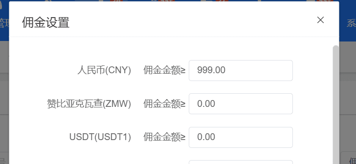
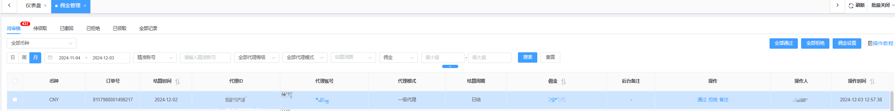
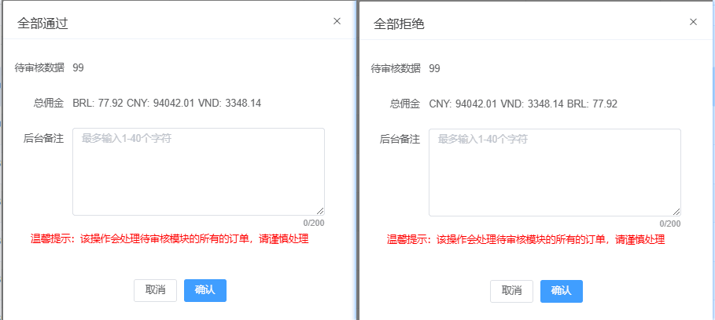
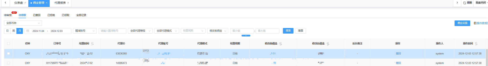
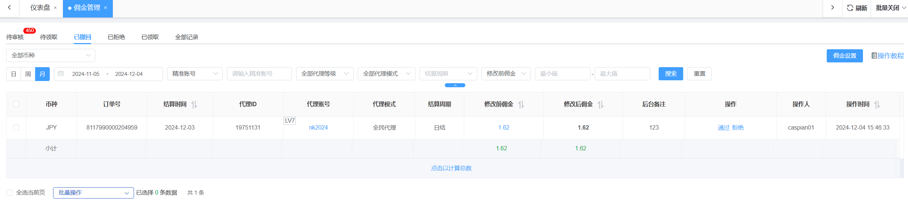
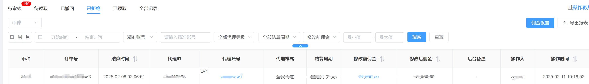
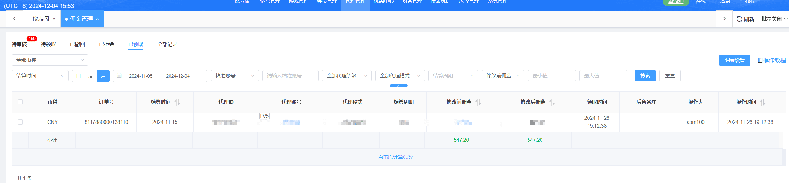
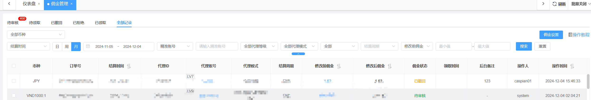

佣金管理教程
1、佣金设置
- 该功能为需要审核代理佣金的设置；
- 佣金设置中显示的当前站点支持的所有的币种；
- 当代理佣金(一个结算周期完成结算)大于等于佣金设置的金额，会转入到待审核中；
- 0代表不限制，即在佣金结算完成之后，会直接转如到待领取中。

2、待审核
- 该页面为一个结算周期代理佣金大于等于佣金设置中的金额的数据
- 该列表按照操作时间倒序进行排序
- 列表功能有通过、拒绝和备注以及对应的批量操作
- 通过：可修改代理佣金金额，通过之后，会转入待领取页面，即代理可领取佣金。
- 拒绝：拒绝之后，佣金则不允许代理领取，即转入已拒绝页面。
- 备注：即可以对该佣金进行备注。
- 代理账号：点击代理账号，可以查看该代理的数据
- 佣金：会跳转到代理总明细查看该代理的在本期的相关的详情。
- 全部通过：即会把当前待审核的数据全部通过审核，一旦审核通过，则会转入待领取，请谨慎操作。
- 全部拒绝：即待审核的所有的数据全部拒绝，一旦拒绝则代理无法领取佣金，请谨慎操作。


3、待领取
- 该模块为在结算周期内代理佣金小于佣金设置的金额(即不需要审核的代理佣金)以及审核通过的代理尚未领取的佣金。
- 数据按照操作时间倒序排序
- 该模块的功能有撤回以及对应的批量操作；
- 撤回：撤回之后，需要再次进行审核，会转入已撤回的页面中，需要进行再次审核。

4、已撤回
- 该模块为从待领取撤回的订单
- 数据按照操作时间倒序排序
- 功能为通过、拒绝以及对应的批量操作
- 通过：和待审核的的通过功能一致，通过之后会再次转入待领取
- 拒绝：即代理佣金则不允许代理领取

5、已拒绝
- 该模块为代理已经拒绝的佣金记录
- 按照时间倒序排序

6、领取记录
- 该模块为代理已经领取的佣金记录
- 按照时间倒序排序

7、全部记录
- 该模块为所有全部的佣金记录的数据
- 按照时间倒序进行排序
